Թեստ 50
30:00
1. "Ճանապարհային երթևեկության անվտանգության ապահովման մասին" ՀՀ օրենքի համաձայն՝ D կարգի և D1 ենթակարգի տրանսպորտային միջոցներ վարելու իրավունքի վկայական կարող է տրվել այն անձանց, ովքեր ունեն`
2. «Ճանապարհային երթևեկության անվտանգության ապահովման մասին» ՀՀ օրենքի համաձայն` վթարային իրադրություն է համարվում`
3. Ավտոբուսների շահագործումն արգելվում է, եթե՝
4. Տրանսպորտային միջոցների շահագործումն արգելվում է, եթե`
5. Դուք շարունակում եք երթևեկությունն ուղիղ, ո՞ր տրանսպորտային միջոցին պետք է զիջեք ճանապարհը:
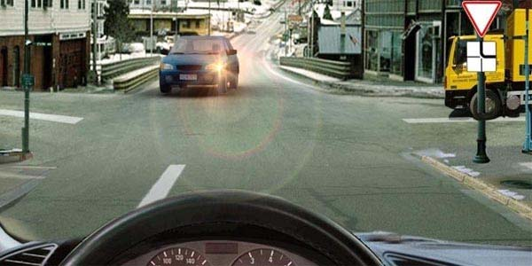
6. Այս նշաններից ո՞րն է համարվում տրանսպորտային միջոցի ճանաչման նշան:
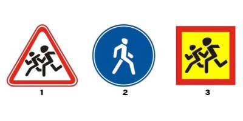
7. Ավտոմոբիլները խաչմերուկը կանցնեն հետևյալ հերթականությամբ`
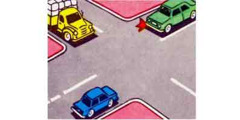
8. Թո՞ւյլատրվում է հետադարձ կատարել այս իրավիճակում
9. Կայանումը ուղեկամուրջից հետո
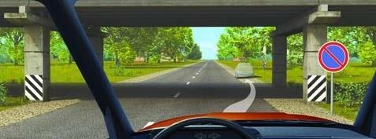
10. Այս խաչմերուկում ծածկույթ չունեցող ճանապարհից մոտեցող բեռնատարին զիջել
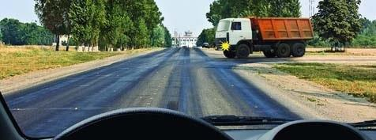
11. Երթևեկությունը թույլատրվում է
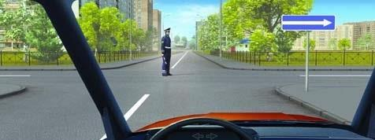
12. Այս հետագծով երթևեկել նման իրավիճակում
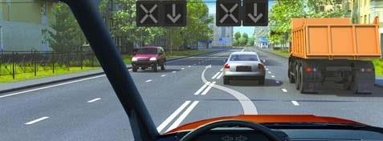
13. Երթևեկությունը թույլատրվում է`
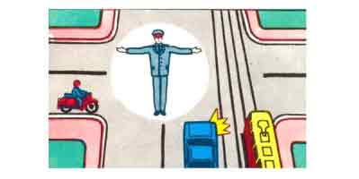
14. Ինչ է ցույց տալիս ընդհատվող լայն գծի տեսքով գծանշումը:
15. Ի՞նչ առավելագույն արագությամբ է թույլատրվում կցորդ քարշակող թեթև մարդատար ավտոմոբիլների երթևեկությունն ավտոմայրուղիներով երթևեկելիս:
16. Կայանատեղիներում կամ ավտոլցակայաններում մանևրելիս ազդանշան տալ լուսային ցուցիչով
17. Կապույտ ավտոմոբիլը խաչմերուկը կանցնի`
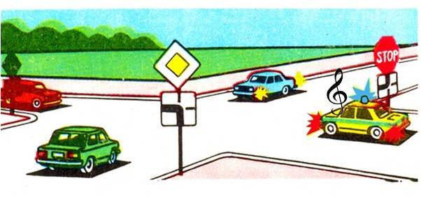
18. Թույլատրվու՞մ է վազանց կատարել տվյալ իրավիճակում:
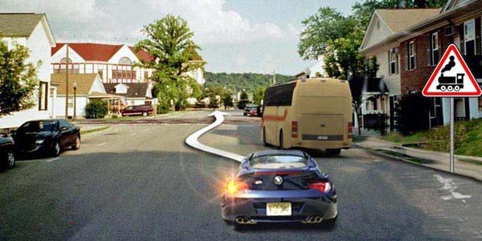
19. Նշաններից ո՞րն է արգելում երթևեկությունը 40կմ/ժ-ից պակաս արագությամբ
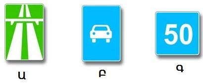